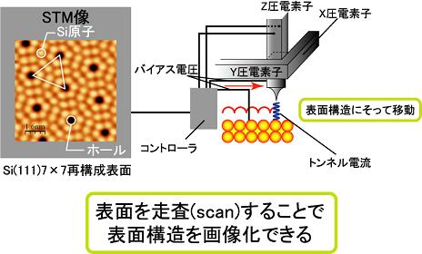

低温 STM 装置の研究開発
走査トンネル顕微鏡（Scanning Tunneling Microscope：STM）とは「原子を見る」ことのできる顕微鏡で、原子レベルで試料表面を三次元空間で観測することが出来る。そのため、ナノ構造体の研究の最先端で活躍している実験手法である。測定方法は、図のように探針と呼ばれる針を試料表面 1 nm まで近づけると、量子力学的な効果でトンネル電流が探針と試料間で流れる。これは、探針から染み出した波動関数と試料から染み出した波動関数が重なることで一方へ電子が流れ出る効果である。STM では、このトンネル電流を一定に保ち試料表面をスキャンさせることで表面を画像化している。走査トンネル分光（Scanning Tunneling Spectroscopy：STS）は、元素選択的に原子の占有状態・非占有状態の電子状態密度を観測できる。STS は、探針と試料の垂直方向の間隔を固定し、バイアス電圧と変えながらトンネル電流を測定する。 この電流-電圧特性を調べることで、測定した位置の状態密度を得ることができ、試料表面の局所電子状態を定性的に知ることが出来る。
近年の、半導体デバイスの高効率化と小型化を達成するためには、ナノスケールの表面加工と表面や界面を運動する電子物性の理解が重要な鍵となっている。また、半導体基板上の金属原子による低次元構造は、次元の低下から量子井戸や Shottky 障壁などの興味深い量子力学的物理現象があり、STM と STS 測定から得られる知見が物理科学や応用化学の分野に大きな影響を与えると期待されている。

光物性研究室と広島大学放射光科学研究センター (HiSOR) は、極低温 ( ~ 4 K) 測定を可能とする STM 装置の研究開発に取り組んできた。現在、極低温測定と常温測定に対応した STM 装置が駆動しており、数多くの研究報告を行ってきた。